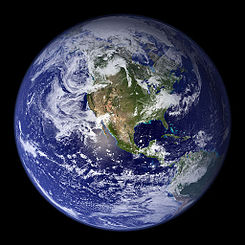

Sobre el Planeta Tierra
- Diámetro ecuatorial: 12,756 km
- Diámetro polar: 12,714 km
- Masa: 5,97 x 1024 kg
- Satélites: 1 (La Luna)
- Distancia de órbita: 149,598,262 km (1 AU)
- Período orbital: 365,26 días
- Temperatura de la superficie: -88 to 58ºC
El planeta Tierra es el tercer planeta desde el Sol y es el más grande de los planetas terrestres. A diferencia de los otros planetas en el sistema solar que llevan el nombre de las deidades clásicas del nombre de la Tierra en inglés(Earth) proviene de la palabra anglosajona erda que significa tierra o suelo. La Tierra se formo hace aproximadamente 4,54 billón años y es el único planeta conocido por sustentar vida.
| Nombre | Diámetro ecuatorial | Temperatura superficie |
|---|---|---|
| Marte | 6,792 km | -87º to -5ºC |
| Venus | 12,104 km | 462ºC |